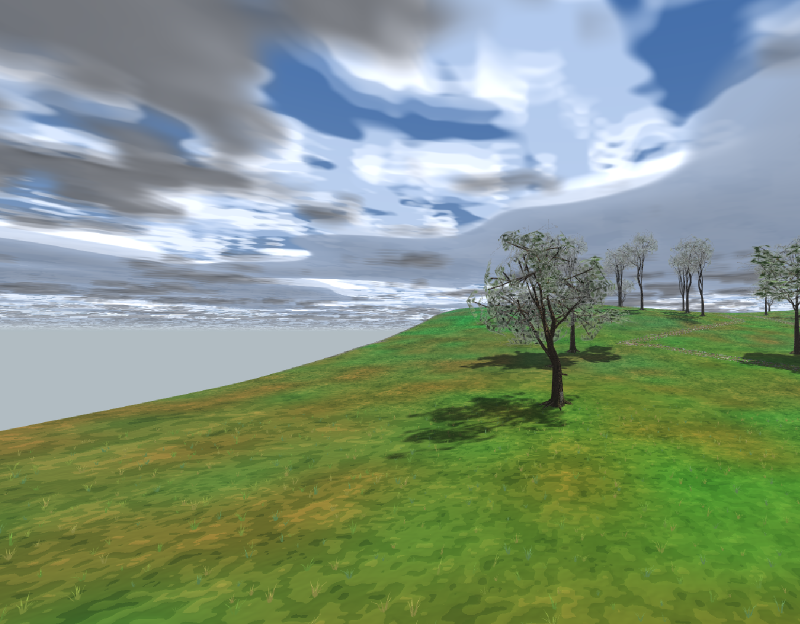
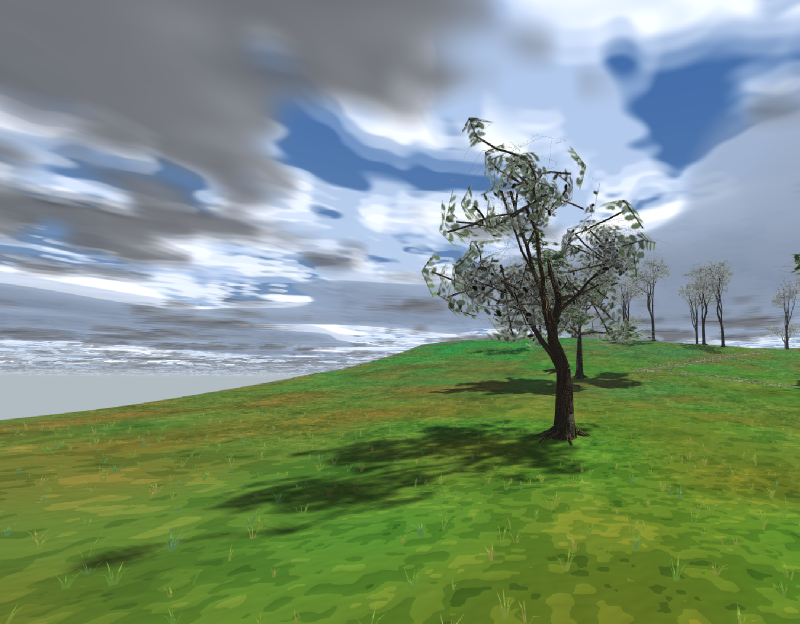
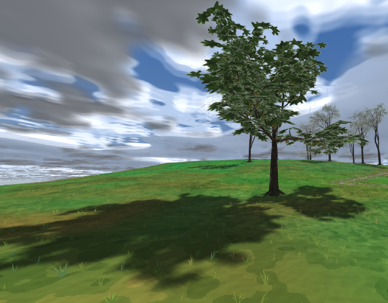
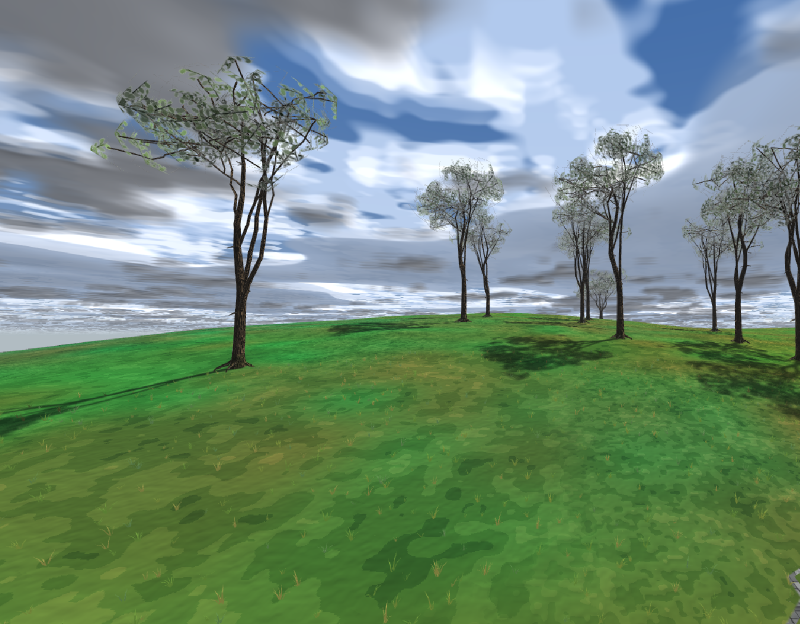
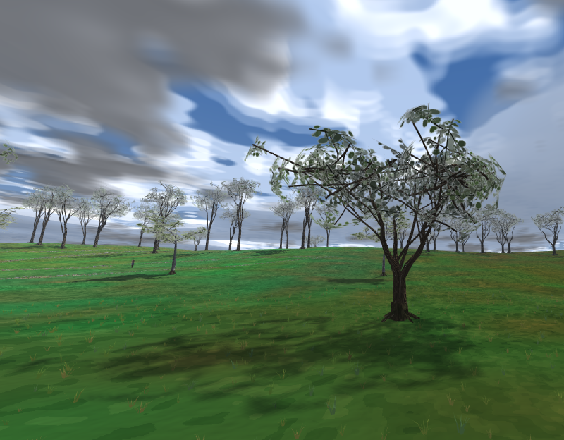
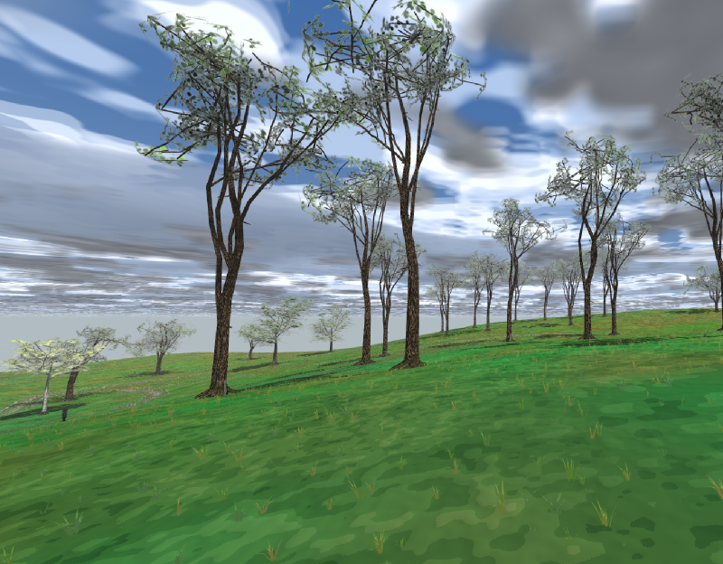
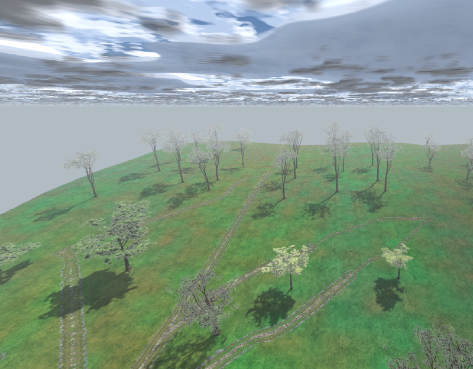

Заказ владельца 28.08.2026 по записке docs/reports/trees-g3/index.html ·
пять разниц с Готикой 3 · первая итерация не тронута
trees/forest-v2 (меню → флора → «Лес второй
итерации»). На ней шесть пар «дерево первой итерации рядом с деревом второй» на ровном лугу,
три рощицы на склоне 10° и многоствольные одиночки на верхней террасе. Это единственная новая
карта волны.



Крона строится из 5–9 крупных ДОЛЕЙ — сфер, разложенных по бочкообразному профилю внутри объёма кроны. Доля — единица и массы, и силуэта: доли складываются в глубину, а небо между ними рвёт обод крупно.
| Величина (измерена по геометрии, не по рецепту) | Полоса записки | v2, одиночные | v1, тот же рост (контроль) |
|---|---|---|---|
| Глубина кроны, долей высоты | > 0.5 | 0.63–0.71 | 0.67 |
| Ширина / высота | ≈ 1.0 | 1.00–1.05 | 1.09 |
| Чистого ствола, долей высоты | ≈ 0.25 | 0.24–0.30 | 0.28 |
| Плотность силуэта — какую долю СВОЕГО силуэта листва закрывает | — | 0.62–0.66 | 0.41 |
Мерится листва, а не рецепт. Во второй итерации
ширина рецепта — это ширина силуэта: свес доли и листа поделён на именованную постоянную
CROWN_OVERHANG, а не оставлен «как вышло» (у первой рецептурное W/H и измеренное
расходились настолько, что INDEX.md несёт об этом отдельный абзац).

Габитус — перечисление, а не ручка: TreeHabit::Solitary / Forest / MultiStem
меняет то, ЧТО делает строитель, а не насколько сильно. Каждая порода печётся обоими габитусами;
рука solitary and forest recipes are two different silhouettes требует, чтобы разница
чистой болы была не меньше 0.20 высоты — то есть чтобы это был закон, а не разброс посева.

acacia-v2-luga-a). Три-четыре ствола расходятся
от земли из общего комля с одним наплывом и одной корневой системой, крона шире
собственной высоты (W/H 1.20–1.30). Позади — первая итерация для масштаба.lean_rad в собственном азимуте плюс S-изгиб внутри той же плоскости, и оба
включаются только выше нижней четверти (жёсткий комель, §1.7). Блуждание с нулевым средним —
лекарство первой итерации от «банана» — давало ствол, прямой в среднем, то есть
одинаковый у всех; это и есть «исчезла всякая индивидуальность» из §3.3.Новые ряды атласа 14 и 15 (PackV2Mid / PackV2Deep) рисуются
другим законом: главная веточка и три боковые, десятки листьев по ним с шагом и
чередованием сторон, и — главное — никакого контура. Непрозрачны только листья и веточки;
всё, чего лист не накрыл, есть небо. У первой итерации внутренность блоба заливается
непрозрачной тенью по построению («never sky»), поэтому её карточка — надкусанный диск.
| Мера по пикселям тайла (256 px) | ряд v2 | ряд OakMid (контроль) |
|---|---|---|
| Непрозрачного в плотнейшей четверти следа — есть ли небо ВНУТРИ листвы | 0.76 | 0.88 |
| Средняя альфа клинка — полупрозрачность на просвет | 189 | 242 |
| Яркость края / яркость сердцевины | 1.50 | — |
Обод кроны — профиль максимального радиуса листвы по 72 азимутальным секторам, сглаженный окном 25° (ширина окна выведена из размера доли, а не подобрана). Максимумов профиля — 3–12 при 5–9 долях рецепта, то есть неровность обода имеет частоту доли, а не карточки. Рука держит верхнюю границу твёрдо: за ней обод снова становится кругом из сотни карточек.
Три структурных закона × два габитуса × два посева = 12 объектов, все на общей полке
assets/objects/trees рядом со старыми, паспорт — INDEX-V2.md.
| Имя | Габитус | content_hash | древ. | листва | H, м | W/H | крона, h | чистая бола, h |
|---|---|---|---|---|---|---|---|---|
| oak-v2-luga-a | луговой | baeb03456fb2027c |
3514 | 1344 | 15.6 | 1.05 | 0.68 | 0.25 |
| oak-v2-luga-b | луговой | ae8282006f425566 |
4172 | 1720 | 18.2 | 1.05 | 0.71 | 0.24 |
| oak-v2-forest-a | лесной | c661db6e9990f0c1 |
3224 | 1128 | 21.9 | 0.72 | 0.42 | 0.53 |
| oak-v2-forest-b | лесной | 5c877282d3b89d4e |
3838 | 1392 | 24.5 | 0.75 | 0.42 | 0.54 |
| beech-v2-luga-a | луговой | 355fd5d10630ecaf |
3828 | 1592 | 16.2 | 1.00 | 0.64 | 0.30 |
| beech-v2-luga-b | луговой | 23edf09589ada95b |
3890 | 1528 | 19.7 | 1.03 | 0.70 | 0.25 |
| beech-v2-forest-a | лесной | f020831844929b90 |
3624 | 1280 | 24.7 | 0.65 | 0.41 | 0.55 |
| beech-v2-forest-b | лесной | 72144eb304ce8f4b |
3342 | 1040 | 28.1 | 0.75 | 0.40 | 0.57 |
| acacia-v2-luga-a | многоств. | 932d337789ad8b23 |
3664 | 1304 | 14.1 | 1.30 | 0.63 | 0.30 |
| acacia-v2-luga-b | многоств. | bb9d8d9bf33fa226 |
4244 | 1392 | 17.1 | 1.20 | 0.70 | 0.24 |
| alder-v2-forest-a | многоств. | 291ed7f81f325aaa |
3474 | 1152 | 17.5 | 0.84 | 0.47 | 0.47 |
| alder-v2-forest-b | многоств. | fc0a23e3c276ab47 |
3534 | 1016 | 20.3 | 0.94 | 0.49 | 0.46 |


.dfo не перезаписан. В git status по полке
assets/objects/trees — 12 новых файлов и ни одного изменённого. Вторая
итерация печётся отдельным бинарником dfn_forge2, который физически не
умеет написать имя без -v2- (и отказывается вслух, если такое встретит).bark_tube в TreeBark.cpp: все 82 файла (trees, colossus,
flora-colours, glade) совпали с полкой байт в байт, кроме одного слова — версии
контейнера 2→3, которая пришла из чужого коммита 9e2c8c9 (секция HOUS) и к этой
волне отношения не имеет. Полезная нагрузка и, значит, content_hash — прежние;
INDEX.md свежей выпечки совпал со старым построчно.trees_v1_frozen (tools/check_trees_frozen.py)
печёт полку dfn_forge во временную папку и сверяет content_hash каждого рецепта со
строкой INDEX.md. Клятва стала прибором..dfo. Ряд, а не колонка,
потому что ширина листа делит каждый запечённый u: при 16 рядах
leaf_tile_uv для рядов 0..13 возвращает те же биты, и старые деревья не
тронуты по построению, а не по аккуратности.dfn_scene_check мерил генератор плюс площадки и реки сцены, но ключ
relief игнорировал. На карте, чья земля есть нарисованный склон, он докладывал
42 находки из 42 размещений, все ровно на глубину склона. Заведён ключ
--relief; с ним площадка второй итерации чиста: 42 размещения, 0 находок.
relief носят и Вайтран, и Житнов,
а по ним прямо сейчас идут городские волны — включить прибор всем сегодня значит сдвинуть их
вердикты под руками. Переключение умолчания — за владельцем тех карт и на спокойном дереве.
docs/reports/trees-tiers/index.html). Это расстановка, не дерево.<имя>-far для пород v2 не испечены: ворота
far_lod в кузнице есть и работают, но сцена-композиция дальние формы не
спрашивает — их берёт поплиточный LOD скаттера, а во второй итерации ещё нет ни одной
скаттерной карты. Печь их сейчас значило бы добавить 12 непроверенных объектов на полку.
кадры
Все — из trees/forest-v2, внутреннее разрешение 1920×1080, время суток 0.42,
камера редактора; кадр обрезан до области 3D и уменьшен вдвое честным боксом
(tools/archive_frame.py). Референсные кадры Готики 3 — в
docs/reports/trees-g3/ref/ (в git не идут).
приборы
render_tree_forge_v2 (13 случаев, 2757 проверок), trees_v1_frozen,
dfn_scene_check --relief.